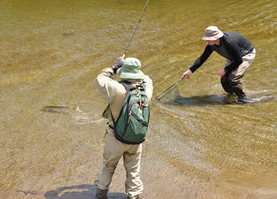
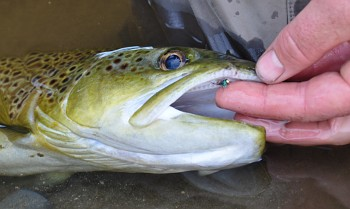
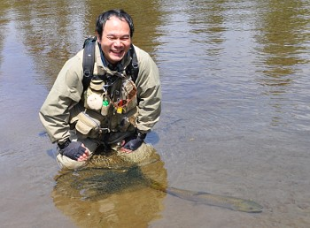

釣行日誌 ＮＺ編 「翡翠、黄金、そして銀塊」
必殺のニンフ
2010/11/24(WED)-2
11月とは言え、ウェストランドの初夏は涼しい。というか肌寒いくらいで、レインジャケットを着込んでの釣りであった。まっすぐな流れが広く流れ、川底は砂地のポイントに来た。ディーンが１尾スポットして、アドバイスをしてくれる。フライは必殺のニンフである。川岸の高場からはよく見えた鱒も、川の中に立ち込むともう見えなくなる。ディーンのアドバイスに従い、慎重に狙いを定め、鱒の上流側１メートルにフライが着水するようにキャストした。しかし外れ。もう一度。またハズレ。もう一度。今度は上手くいった。
「ストライク！」
ディーンの声と同時に合わせると、これまでとは全然違う重量感がロッドに乗った。大きい。幸い流木や障害物は無いので安心してファイトを楽しむ。と書くと聞こえはいいが、今度はバラさないようにとそれだけを心配して、ややナーバスなファイトになってしまった。ディーンがネットを差し出して魚体をすくおうとするが、もう少しの所で届かない。

再びファイト。さしもの大物も徐々に弱ってきて、とうとうネットに収まった。ディーンが鱒の顎からニンフを取り外してくれた。緑色に輝く必殺のニンフは、本当によく効く。ディーンがこのニンフに信頼をおいている理由がよくわかった。

ネットに収まった魚体を静かに抱く。ずっしりとした重みが両腕にかかり、確かな幸せがそこにあった。二日目の第１尾目である。１尾釣るとだいぶ心理的なプレッシャーは弱まり、なんとなく川と自分との距離が縮まった感じを受ける。ランディングネットを傾けると、去って行く鱒は激闘の疲れを見せて、ゆっくりゆっくりと水の深みへと消えた。くしゃくしゃの笑顔が僕には残った。キツーぃウィスキーかビールを一杯やりたくなる気分である。

釣行日誌ＮＺ編 目次へ
サイトマップ
ホームへ
お問い合わせ